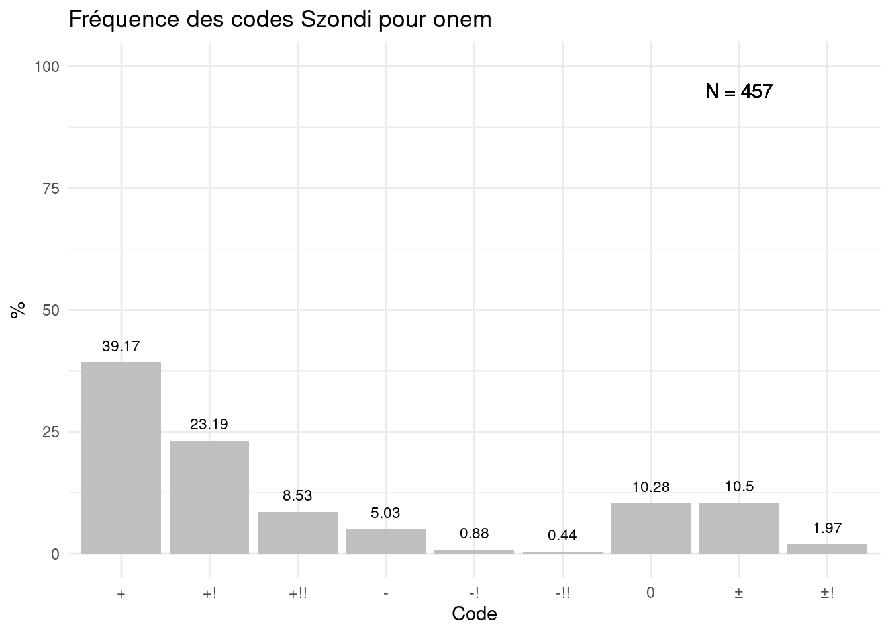

Introduction
Le test de Szondi est un test projectif qui vise à révéler le fonctionnement pulsionnel d’une personne en référence à la psychologie du choix de Szondi, Schotte, & Van Reeth (1967). Un article précédent (Thiry, 2020) visait à proposer des normes pour les principales variables du test de Szondi. A cette occasion, nous avions souhaité rendre compte des phénomènes de tension et de décharge sans nous référer aux codes classiquement utilisés par les utilisateurs du test tels que +, -, 0, ±, etc. En effet, nous estimions que ces codes amenaient à une perte d’information car certains renvoient à plusieurs choix faits par les personnes évaluées. Les tableaux 4, 6 et 7 de notre article proposaient déjà les normes pour tous les facteurs des dix passations du test de Szondi. Ces résultats chiffrés ont toutefois comme désavantage d’être potentiellement déconcertants pour les utilisateurs du test. Par conséquent, nous avons convertis les choix des participants en codes afin d’en calculer les fréquences pour chaque passation du test. Nous nous sommes intéressés aux choix de l’avant-plan (VGP) 1 afin de ne pas alourdir la présentation des résultats. Une étude similaire peut être envisagée pour l’arrière-plan dans un autre temps. L’étude des liens entre les deux plans nécessiterait une étude distincte. Cet article propose dès lors des nomes sous forme de fréquences de codes.
Méthodologie
La récolte des données est similaire à celle de l’article précédent (Thiry, 2020). Le nombre de participants a augmenté entre-temps.
Participants
Les participants sont 457 détenu(e)s belges admissibles à une libération anticipée en cours d’évaluation psychosociale. Le / la psychologue en charge de l’évaluation a administré le test de Szondi à dix reprises. L’échantillon se compose de 421 (92%) hommes et de 36 (8%) femmes. L’âge moyen est égal à 38.25 (ET = 11.52, min = 18, max = 79) ans.
Traitement des données
Pour chaque passation du test de Szondi, nous avons retenu le nombre de photographies choisies comme sympathiques ou antipathiques à la première présentation (c’est-à-dire à l’avant-plan, VGP). Il existe six photographies pour chaque facteurs. Un participant pourrait considérer les six photographies comme sympathiques ou sympathiques mais pourrait également en considérer certaines comme sympathiques et d’autres comme antipathiques. Il existe donc plusieurs configurations de choix. Les codes découlent de ces configurations. La grille de cotation est reprise dans le tableau 1.
| Sympathiques | Antipathiques | Code |
|---|---|---|
| 0 | 0 | 0 |
| 0 | 1 | 0 |
| 1 | 0 | 0 |
| 1 | 1 | 0 |
| 2 | 2 | ± |
| 3 | 2 | ± |
| 3 | 2 | ± |
| 2 | 0 | + |
| 2 | 1 | + |
| 3 | 0 | + |
| 3 | 1 | + |
| 0 | 2 | - |
| 1 | 2 | - |
| 0 | 3 | - |
| 1 | 3 | - |
| 4 | 0 | +! |
| 4 | 1 | +! |
| 0 | 4 | -! |
| 1 | 4 | -! |
| 5 | 0 | +!! |
| 5 | 1 | +!! |
| 0 | 5 | -!! |
| 1 | 5 | -!! |
| 6 | 0 | +!!! |
| 0 | 6 | -!!! |
| 3 | 3 | ±! |
| 4 | 2 | ±! |
| 2 | 4 | ±! |
Par exemple, si un participant a choisi 3 photographies h comme sympathiques et 1 photographie h comme antipathique, le code correspondant est h+. Si un participant a choisi 2 photographies h comme sympathiques et 4 photographie h comme antipathiques, le code correspondant est h±!.
Résultats
Les graphiques suivants montrent les fréquences (en pourcentages) de chaque code szondi (+, +!, +!!, +!!!, -, -!, -!!, -!!!, 0, ±, ±!) pour chaque facteur (h, s, e, hy, k, p, d, m), pour chaque passation (de 1 à 10). Un onzième tableau propose la somme cumulée des choix aux dix passations (N = 4570).
h
h : passation 1
h : passation 2
h : passation 3
h : passation 4
h : passation 5
h : passation 6
h : passation 7
h : passation 8
h : passation 9
h : passation 10
h total
s
s : passation 1
s : passation 2
s : passation 3
s : passation 4
s : passation 5
s : passation 6
s : passation 7
s : passation 8
s : passation 9
s : passation 10
s total
e
e : passation 1
e : passation 2
e : passation 3
e : passation 4
e : passation 5
e : passation 6
e : passation 7
e : passation 8
e : passation 9
e : passation 10
e total
hy
hy : passation 1
hy : passation 2
hy : passation 3
hy : passation 4
hy : passation 5
hy : passation 6

hy : passation 7
hy : passation 8
hy : passation 9
hy : passation 10
hy total

k
k : passation 1
k : passation 2
k : passation 3
k : passation 4
k : passation 5
k : passation 6

k : passation 7
k : passation 8
k : passation 9
k : passation 10
k total
p
p : passation 1
p : passation 2
p : passation 3
p : passation 4

p : passation 5
p : passation 6
p : passation 7
p : passation 8
p : passation 9

p : passation 10
p total
d
d : passation 1
d : passation 2
d : passation 3
d : passation 4
d : passation 5
d : passation 6
d : passation 7
d : passation 8
d : passation 9
d : passation 10
d total
m
m : passation 1

m : passation 2
m : passation 3
m : passation 4
m : passation 5
m : passation 6
m : passation 7
m : passation 8
m : passation 9
m : passation 10

m total
Discussion
Les résultats se veulent principalement descriptifs. Les codes les plus fréquents sont les suivants : h+, s-, e0, hy-, k-, p-, d0, m+. Notons que ce profil basé sur les codes les plus fréquents est quelque peu différent de celui dégagé dans l’étude précédente (Thiry, 2020)2. A titre d’autres comparaisons, Goncalves, Kiss, & Kaplar (2010) ont administré le test de Szondi à 126 Hongrois et à 176 Portugais et ont montré que les positions pulsionnelles les plus fréquentes étaient celles-ci :
| Nationalité | h | s | e | hy | k | p | d | m |
|---|---|---|---|---|---|---|---|---|
| Hongrois (N = 126) | + (38.5 %) | - (38.1 %) | 0 (31.7 %) | - (69.7 %) | - (51%) | + (61.3 %) | 0 (41.1 %) | + (66.4 %) |
| Portugais (N = 176) | + (44.1 %) | + (47.7 %) | 0 (.4.1 %) | - (70.7 %) | - (53.4 %) | - (31.9 %) | - (42.2 %) | + (77.5 %) |
Ces deux profils et celui que nous avons obtenu sont globalement similaires malgré quelques différences (par exemple en s et en p).
Nous ne formulons ici aucunes interprétations psychologiques. D’autres études sont nécessaires afin d’évaluer la validité externe de ces codes. Dans l’attente de telles études, toute interprétation psychologique à partir du test de Szondi s’avère hasardeuse.
Les références
Goncalves, B., Kiss, E., & Kaplar, M. (2010). Comparing the Szondi Test results of Hungarian and Portuguese community samples. 4, 81‑89. Consulté à l'adresse http://www.szondi.pte.hu/document/hun-port.pdf
Szondi, L., Schotte, J., & Van Reeth, C. (1967). De la psychologie du choix. Revue Philosophique de Louvain, 65(87), 332‑355. https://doi.org/10.3406/phlou.1967.5397
Thiry, B. (2020). Norms for the Szondi Test on a prison sample. Szondiana, 39(1), 77‑91. Consulté à l'adresse http://www.szondi.pte.hu/document/szondiana2019.pdf